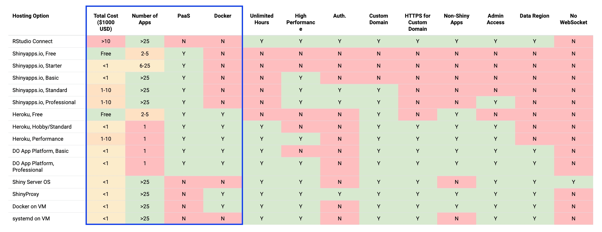
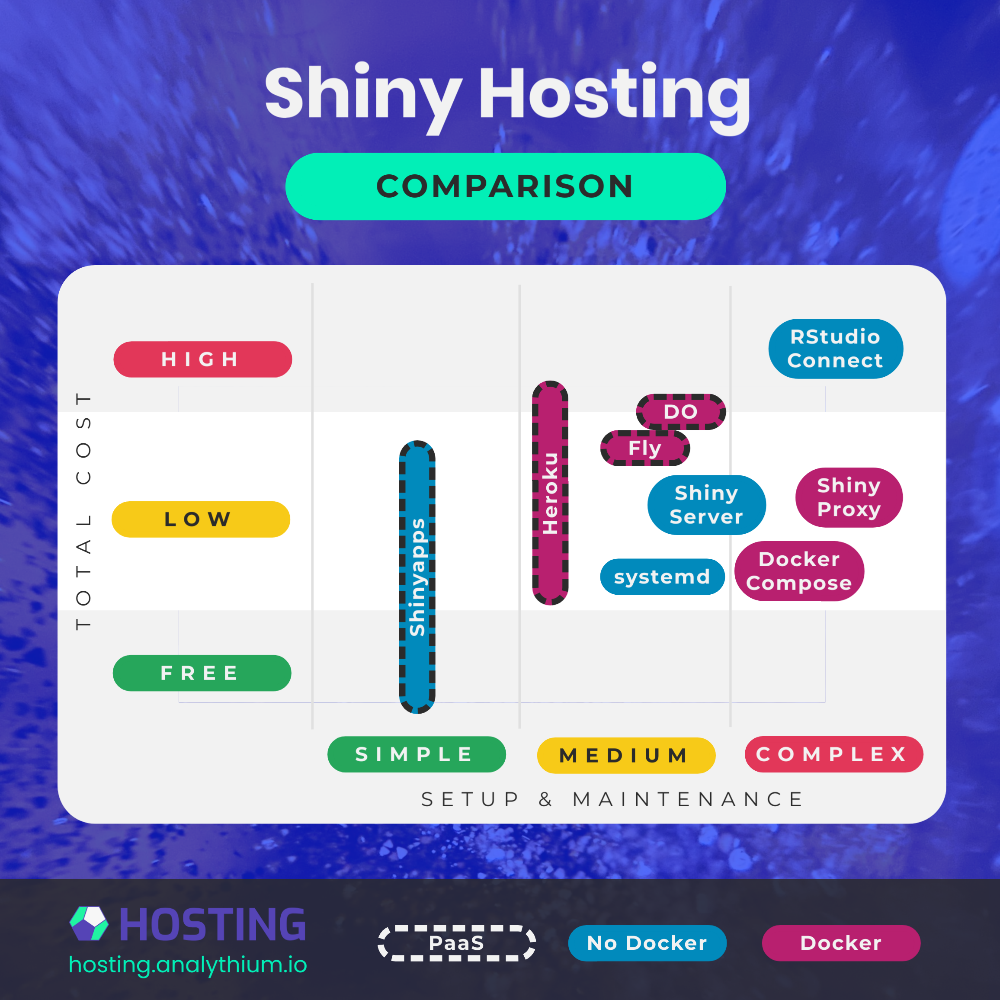
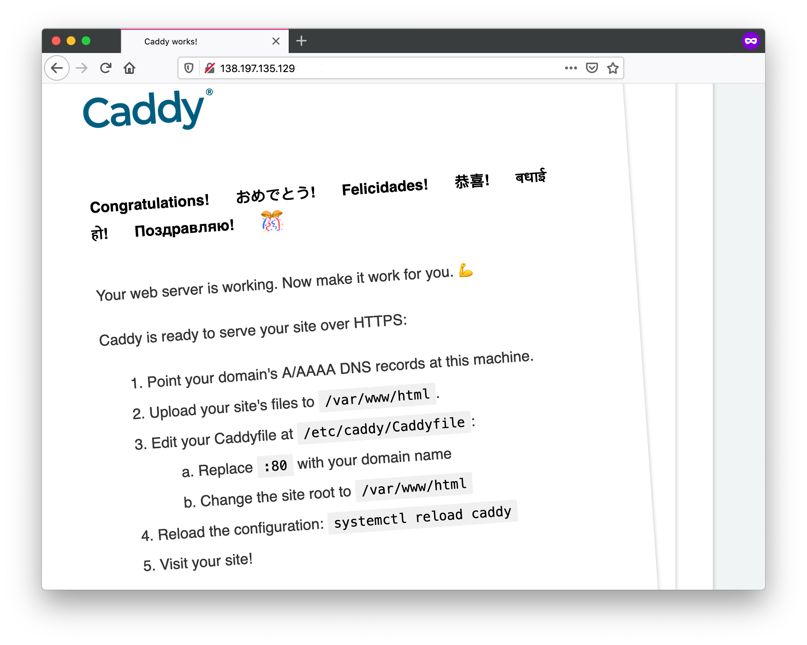

Chapter 7 A Review of Shiny Hosting Options
The Hosting Data Apps website recently celebrated its 6-months anniversary. During this time I have written 40 posts, almost all about Shiny hosting options. Some of these posts reviewed particular hosting options, such as Shinyapps.io, Shiny Server, Heroku, and ShinyProxy.
A lot has been said about the hosting options themselves, but what about the needs of the developers and the users?
The most important question to ask is: “which option is better for what**“? This is where developers and the users of the app come into the picture with their specific needs and constraints.
You could say, for example, that “I want to host my portfolio for free and I don’t care about a custom domain name”. Or a nonprofit might say, “we want to host our apps at low cost, we want custom domains, and we want to be able to handle surge traffic, but we don’t want to maintain any servers”.
These are really specific criteria, and if you ask me, I might say Shinyapps.io is best for you and Heroku with a Docker-based deployment is best for this organization. But how would you or I make such a decision?
If you have been developing Shiny apps, you might already have your preferred way of deployment. But as your needs evolve, you will identify additional requirements and might find that your go-to option is not the best anymore. Then you’ll do some research and find the next option.
If you are not yet familiar with Shiny hosting options, you still need to make an informed choice at some point, so that you are not wasting your time and effort on something that will not serve you well over the long run. Here is the 3 step process that you can follow to help you with this decision.
Before you begin take a piece of paper.
7.1 Start with the why
Why do you want the app or apps deployed? Are you building a portfolio to boost your career? Are you deploying useful apps for stakeholders or clients of your organization? Are you trying to sell an app as a software-as-a-service (SaaS) offering?
Write down your answer.
Getting clear on the why is the most important question. You might even realize that you don’t need to host your Shiny app. For example, your app might be used on a laptop as a GUI to analyze data by non-specialists in the field without internet or cell coverage. In this case, no need to move on to step 2, because all you need is to run Shiny locally.
However, if your answer makes it clear to you that your users will be accessing the app over the Internet, move on to step 2.
7.2 List your requirements
Answering the Why question will probably reveal important details about your motivations, your audience, the number of apps you are going to host, etc. The answer will also bring you closer to identifying the requirements that you’ll need.
For example, do you need a custom domain, how many users are you expecting, do you need authentication or app-level authorization? Do you want to host a single app or do you need to host many apps? Will you host non-Shiny apps?
Write these down too.
The following table lists the important features for many different Shiny hosting options. The table lists tiers offered by the same company as a separate option. Use this table to find the options that meet your requirements. For now, just ignore the columns inside the blue rectangle.

If you crave a more interactive experience, I made a filterable version:
View the video of it here: https://www.youtube.com/watch?v=iGKQMKuz-ww.
Visit https://hosting.analythium.io/assets/files/shiny-hosting-options.html to filter the options and pick the right hosting option for your Shiny app.
Once you filter the table according to your requirements, you’ll see a list of your ideal hosting options. Put these in the file or onto the paper too.
7.3 Identify your constraints
The last step involves identifying your constraints:
- What is your budget?
- What is your current skill level?
- How much time do you have time?
Recognizing these constraints will guide you toward an optimal solution. This is the point where the columns inside the blue rectangle come in.
The Total Cost of Ownership (TCO) (USD/year) covers licensing fees and operating costs for the “Number of Apps” listed in the table. Prices range quite a bit from free to the tens of thousands. Price increases with performance and with the availability of enterprise features, such as custom domains and authentication.
PaaS means platform-as-a-service, i.e. it is a fully managed system without you having to worry about the underlying infrastructure. This also means less control over the infrastructure, i.e. when it comes to choosing the data region where your app is served from.
Unlimited app hours are more common for self-hosted options or paid PaaS plans including a single app. The need to host multiple apps will involve some compromises. The ability to host non-Shiny apps (Dahs, Streamlit, etc.) is a feature for RStudio Connect and the Docker-based options (Shinyapps and Shiny Server can host Shiny for Python).
Time as a constraint will depend on how far your current skill level is from the level needed for a specific hosting option. You also have to consider that some options are fully managed PaaS offerings, others you have to manage, or learn how to use Docker.
If you have to develop new skills, it might take longer. If you have to manage your servers, it will take more time to get started and then you are on the hook for maintaining your setup.
Make your selections inside the columns within the blue area.
7.4 Options at a glance
After the 3-step process, you should see only a few or a single option left. Click on the name of the hosting option and the link will take you to the relevant tag page on the Hosting Data Apps website:
- Follow the instructions in the tutorials to get started
- At the end of each post, you’ll find a Further reading section listing additional resources
If there is no option left in the table, then you might need to be more realistic about your expectations or relax some of your constraints. For example, to keep costs low, you could spend more time and invest in skill development. But if you have more room in your budget, you might choose a different path. You can also revise your requirements until you find an acceptable solution.
The following diagram gives an intuitive overview of the different options. The vertical axis represents the total cost from the table above: free, low, and high cost. The horizontal axis shows a range of skills you need to set up and manage your hosting solution. It can be as simple as pushing a button, or as complex as managing servers or cloud clusters.

The hosting options in this diagram are not separated by tiers but rather shown as spanning over a range. The fill colours identify Docker and non-Docker-based options, the stroke styling indicates the PaaS solutions.
Starting November 28, 2022, free Heroku Dynos, free Heroku Postgres, and free Heroku Data for Redis will no longer be available – see this FAQ for details.
If you followed the 3-step process to collect all the information you need, it is likely that you have found an option that is best for your needs. Now go ahead and learn more about that option, deploy, and start hosting your app.
Shiny is a very popular interactive data application framework. As a result, new hosting options are popping up every time. As the number of these hosting options grows in the future, I might update this post by adding the new contenders to the table.
If you know a Shiny hosting option that is not listed in the table, add that to this form so that I can include it next time!
7.5 Hosting Patterns
Include here: Hosting Patterns for Shiny Apps
Web applications can run statically or dynamically. If running statically, then a backend server is not required as all the necessary content is pre-generated. Dynamic web applications require a backend server to render pages.
The pros of hosting an app statically include a small app size and fast loading speed, the ability to be hosted for free, improved SEO, and content decoupling. However, the cons are that the app is the same for all users and not reactive.
One benefit of a dynamically hosted app is the provision of user-specific content along with full reactivity facilitated by websockets. However, the drawbacks include the tendency to be resource-hungry, slow initial loading times, challenges with SEO optimization, more complex hosting requirements, and the high performance costs.
Both static and dynamic apps can be hosted on platforms, or servers that you manage. In this chapter, we want to build the intuition behind the different kinds of hosting options and choosing the option that best suits your needs.
To connect to a hosted application, a reverse proxy is required. A reverse proxy sits in front of your web application and forwards browser requests to your web application. It is used to create a secure connection to your web application and to distribute the load of user requests to your web application. A reverse proxy also helps to route requests to a domain sent by a client to the server to the appropriate web application.
In this chapter we dive into reverse proxies, static Shiny apps, dynamic Shiny apps, and custom domain names.
7.6 The Cloud
The cloud refers to remote servers that are available for rent at a cost. Often the costs of these remote servers are charged by the hour. The cloud is part of IaaS (Infrastructure as a Service) where server infrastructure can be provided on demand. Some of the post popular cloud services include:
- DigitalOcean
- AWS EC2
- Akami (Linode)
- Google Cloud Platform
- Vultr
These service can spin up a server for you to remotely connect to in minutes. This remote connection can be done via the command line as we have described in Part 3.
7.6.1 Servers
You might be wondering, what plan do I choose or how do I get started? In this section, we want to highlight the general intuition behind getting started with a cloud provider. We will outline the concepts of the different options when choosing a server plan for a cloud provider.
For our examples, we will be using DigitalOcean. However, the same principles apply to different cloud providers.
- CPU
- RAM
- OS
- IP Address (IPV4 vs IPV6)
- SSH Key
Later we will talk about securing your server instance.
7.7 Custom Domain Names
Custom domain names are important for giving an easy to access url for your Shiny application. It is important for branding memorability.
To obtain a custom domain, you must register a domain with a registrar. The registrar leases you a domain name from the domain registry annually for a nominal fee. You must renew your domain name every year. Each domain extension (e.g. .com) has its own registry.
Some common domain name registrars are NameCheap, NameSilo, and Porkbun.
Domain names are linked to a name server that helps resolve to an IP address of a server that returns content to a client.
On the domain name server (DNS), the A record entry helps resolve a name to an IPV4 address.
The AAAA record entry helps resolve a name to an IPV6 address.
Lots of websites have shifted to using IPV4 in addition to IPV6.
It is recommended that you at least have an IPV4 record as not everybody has an IPV6 connection.
A fully registered domain name is one of the requirements for an HTTPS certificate.
7.8 Reverse Proxies
There are different options of reverse proxies such as: Nginx, Apache, and Caddy.
One of the easiest to use and configure is Caddy. Caddy uses HTTPS automatically and by default. It obtains and renews TLS certificates for your sites automatically, and comes with lots of handy features.
HTTPS is important because it encrypts the traffic between the client and server. It ensures that the data sent to the client from the server is not tampered with and vice-versa.
To use this section, we assume that you have setup a linux server.
Start a Ubuntu 20.04 virtual machine and follow instructions from the
introductory ShinyProxy
post
to have the server available on http://$HOST:8080 with the two demo
applications.
For a Let’s Encrypt
certificate, you
need a fully registered domain name and an email address. I use the
example.com domain here, you have to substitute your domain name. Add
an A record with example.com pointing to your server’s public IP
address.
7.8.1 Install Caddy
Log in to the server (ssh root@$HOST) and follow the
instructions:
sudo apt install -y debian-keyring debian-archive-keyring apt-transport-https
curl -1sLf 'https://dl.cloudsmith.io/public/caddy/stable/gpg.key' | sudo apt-key add -
curl -1sLf 'https://dl.cloudsmith.io/public/caddy/stable/debian.deb.txt' | sudo tee /etc/apt/sources.list.d/caddy-stable.list
sudo apt update
sudo apt install caddyAfter installing Caddy with apt it will already be running as a
service. It is also enabled (see output from
systemctl is-enabled caddy), which means that it will restart with the
system. Visit http://$HOST to see the Caddy welcome page:

Make a text file called Caddyfile: touch Caddyfile then
nano Caddyfile, and add the following content. Make sure you add your
domain name to the 1st line, or just use :80 if you want to serve
Shiny apps without custom domain and over HTTP, replace
your email in the global configuration block (some challenges and Let’s
Encrypt notifications require the email, but this block is optional):
{
email your.name@example.com
}
yourdomain.com {
reverse_proxy 0.0.0.0:3838
}Save (CTRL+O) and exit (CTRL+X) nano. Now copy the file to the
/etc/caddy/Caddyfile location. With this you make sure that
systemctl will restart the Caddy server according to the new
specifications:
sudo cp Caddyfile /etc/caddy/CaddyfileUse systemctl reload caddy to apply the changes. Now Caddy will be
busy in the background setting up transport layer security (TLS)
certificates for HTTPS. Use journalctl -u caddy --no-pager | less to
view the logs of what is happening behind the scenes.
Visit https://yourdomain.com to see the Shiny Server welcome page. The
two demo apps are located at https://yourdomain.com/sample-apps/hello/
and https://yourdomain.com/sample-apps/rmd/.
That’s it! You can now disable port 3838 with
sudo ufw delete allow 3838. HTTP requests will redirect to HTTPS.
Finally, don’t forget to destroy the server if you don’t need it
anymore. This is the time to save a machine image for future use, such
images cost very little.
Caddy server makes it super easy to obtain TLS certificates for your custom domain and to serve Shiny apps securely over HTTPS on top of the open-source Shiny Server.
7.9 Monitoring Processes
Often times, you might need to check if a specific program is running on your remote computer, or you would like to know the memory or CPU that is currently being used.
By typing the top command you can get a live view of the processes currently running on your computer.
At the top you can see the total time your computer has been running for.
The %cpu row shows how much of the CPU is being used. The us stands for user time of the cpu, while the sy stands for the system of the CPU.
Below the %cpu row is the MiB Mem row which shows the amount of memory that is consumed in megabytes. And the MiB Swap which is the hard disk space used for RAM.
Finally, there are the live processes in a table below the top heading. You can see the command that has been executed and the amount of CPU and memory it has been using.
To quit top, simply press the q character on your keyboard.
FIXME: add used/free disk space commands.
7.10 Systemctl
Enable, start, stop, log, restart/reload system processes.
FIXME: SHOULD THIS GO INTO THE HOSTING CHAPTER WHEN DEALING WITH VM’S? I think we should mention it here…
7.11 Shutdown and Reboot
You may need to reboot or shutoff your server at times. These commands will require super user access as you may be interrupting the operations of other users on the server.
Therefore to reboot the server, you would run: sudo reboot.
To shut off the server, you would run: sudo poweroff.
If you do shut off the server, you will have to turn it back on in your cloud hosting provider panel. Or if it is a physical server, you can also physically press the power button.
7.14 Dynamic Shiny Apps
7.15 Deploying Static Files with Shinylive
How to deploy to GH pages etc.
Share Shinylive: https://shiny.posit.co/py/docs/shinylive.html
FIXME: this needs a visuals. Include relevant links:
Code for deploying Shiny applications that will run completely in the browser, using Pyodide and webR (Python and R compiled to WebAssembly).
- https://ropensci.org/blog/2023/11/17/runiverse-wasm/
- https://github.com/posit-dev/shinylive
- https://shinylive.io/r/examples/ and https://shinylive.io/py/examples/
Exporting ‘shiny’ applications with ‘shinylive’ allows you to run them entirely in a web browser, without the need for a separate R server. The traditional way of deploying ‘shiny’ applications involves in a separate server and client: the server runs R and ‘shiny’, and clients connect via the web browser. When an application is deployed with ‘shinylive’, R and ‘shiny’ run in the web browser (via ‘webR’): the browser is effectively both the client and server for the application. This allows for your ‘shiny’ application exported by ‘shinylive’ to be hosted by a static web server. – https://cran.r-project.org/web/packages/shinylive/index.html
7.16 Deploying Shiny Apps to Shinyapps.io
- Share your Shiny app as a web page
- synamic Shiny deployment (Shinyapps)
- static Shiny deployment (Shinylive + GH pages)
IDE has button to deploy to Shinyapps, also show the rsconnect ways fr R & Python
The developers of Shiny have developed one-click solutions for deploying to ShinyApps.io. The caveat is that hosting costs can become quite costly, and there are limitations to the hours that an app can be run for in the free tier.
To begin, sign up for ShinyApps.io.
7.16.1 R
To deploy in RStudio, install the rsconnect package, load the rsconnect package.
Shinyapps.io: free or paid cloud hosting with push-button publishing. Push-button publishing is available for Shinyapps.io from the RStudio IDE (desktop or server edition) or from any R console using the rsconnect R extension package.
FIXME: add more here.